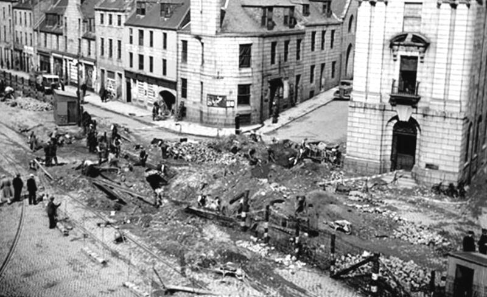
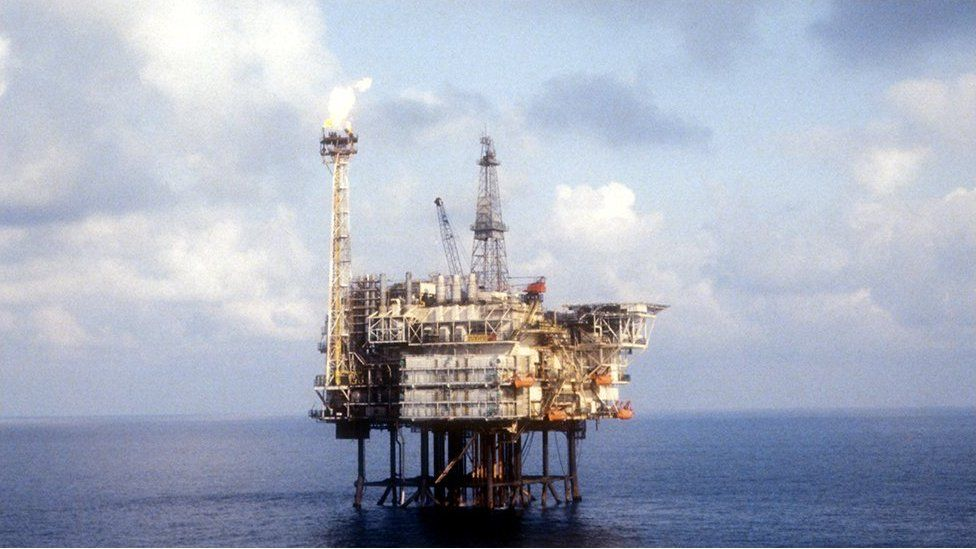

The Aberdeen area has seen human settlement for at least 8,000 years.
The city began as two separate burghs: Old Aberdeen at the mouth of the river Don; and New Aberdeen, a fishing and trading settlement.
New Aberdeen included the Cathedral & University settlement.
These seperate settlements can be noted by the age of the architecture in these two areas of Aberdeen.

Aberdeen suffered from the most bombings in Scotland as part of the German air raids in WW2.
Not necessarily due to the strategic value of the city, but rather due to the geographical location, as Aberdeen was the first contact with land the Luftwaffe.
Leaving bombers to drop their bombs earlier due to fear of anti-air battery.

Regarded as the oil capital of Europe, Aberdeen has been bustling with oil and gas activity since BP developed the Forties field in the 70s.
A decade later, Britain had become a net-exporter of oil due to the massive developments offshore.
This lead to great economic activity in the region. However, the success wasn’t without cost, as shown with the Piper Alpha disaster.
Where over 165 men lost their lives in one of the greatest offshore disasters in history.